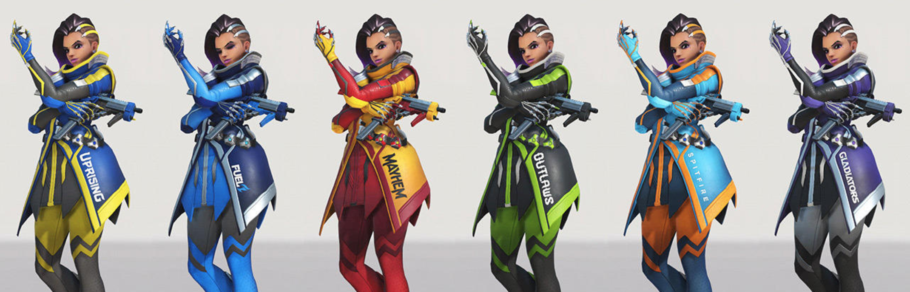
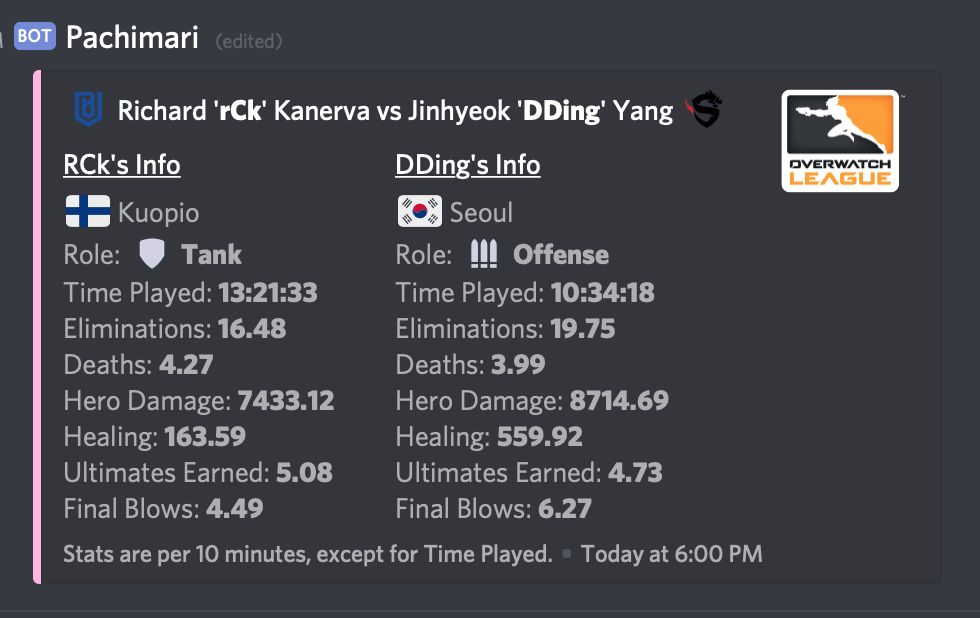
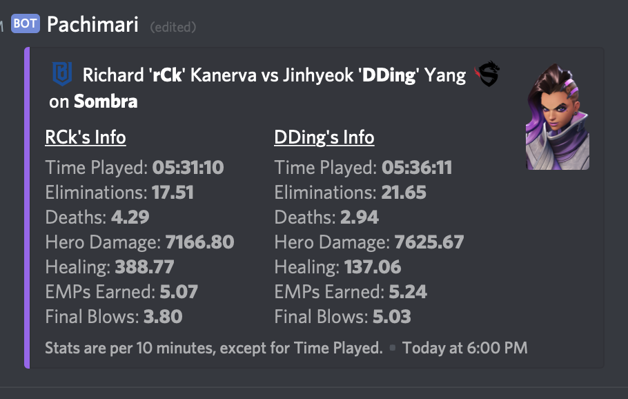
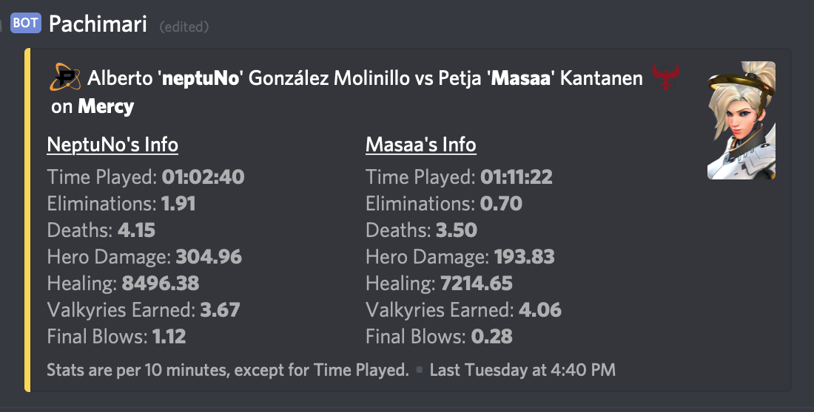

Overwatch League Stats Comparisons with Pachimari
By AnnabellePublished on May 7th, 2019
Pachimari's the premiere Discord app for viewing Overwatch League player comparisons. Let's see how this provides insights on your favorite players!
Comparing Players with the Compare CommandA popular feature Pachimari offers is the ability to compare stats between two players.
We can do this by using the syntax !compare firstname secondname with an optional
hero name at the end. Not only is it great for settling disputes
between friends and fans, it can spark conversations about play styles, and compel you to watch the
Overwatch League!

Pachimari comparing overall League stats between rCk and DDing.
DDing and rCk are two of the noteable Sombra players in the League this season and are praised by old and new Sombra fans. I'll be demonstrating how we can use Pachimari to dissect possible playstyles for two players on specific heroes using these two players on Sombra.
Comparing Hero Specific StatsNot only can we compare two players in their league stats We can do this by using the syntax
!compare firstname secondname heroname with an optional hero name at the end. Not
only is
it great for settling disputes
between friends and fans, it can spark conversations between the differences in gameplay. Check out
rCk and DDing's stats on Sombra below:

Pachimari comparing Sombra specific stats between rCk and DDing.
These two are close in playtime, with a small difference of approx. 5 minutes – a lot can be accomplished within this time in Overwatch! One important stat to think about for a Sombra player would be "Healing" as this can indicate how a Sombra player enables their team to push, or rather, how they dissable the enemy team's push. While DDing has done less healing than rCk, DDing has more hero damage, eliminations, final blows, and less deaths while rCk has more healing done and more deaths, while having less hero damage, and eliminations, EMPs earned, and final blows.
These numbers at first glance may lead you to believe that DDing is the stronger Sombra player. However, what I find interesting about this feature is that there's room for deeper interpretation. During Game 4 of Boston Uprising's match against Washington Justice, one of the casters noted that Uprising has better footing with rCk on Sombra because of his ability to disable the enemy team's push while enabling his own team. The Game Haus also acknowledged that "Boston plays [sic] around their Sombra well."
Another favorite comparison was between neptuNo and Masaa on Mercy, specifically neptuNo's stats:

Pachimari comparing Mercy specific stats between neptuNo and Masaa.
Masaa has a higher playtime and lower deaths compared to neptuNo. NeptuNo however has more healing done, more elimiantions. Having less valkyries earned could attribute to Masaa's dying less, but the healing reward on neptuNo's side could indicate that he's making high risk plays with high reward.
This feature helped me stay glued to Overwatch League in hopes of understanding the context behind these stats. We hope that you enjoy this feature, and we look forward to seeing how you use this feature in the future!
Tweet